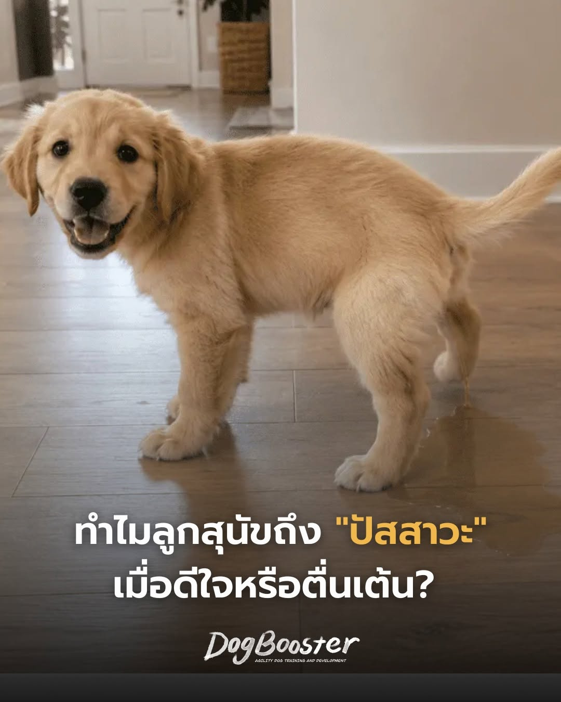

หลายคนเคยเจอเหตุการณ์นี้ — เปิดประตูเข้าบ้าน ลูกสุนัขรีบวิ่งมาหา กระดิกหางสุดแรง แล้วจู่ ๆ ก็มีฉี่หยดลงบนพื้น
เจ้าของหลายคนคิดทันทีว่า “ลูกยังฝึกขับถ่ายไม่สำเร็จ” “ทำไมบอกแล้วก็ยังทำอีก” แต่ความจริงแล้ว... ลูกสุนัขส่วนใหญ่ไม่ได้ตั้งใจทำเลยค่ะ นี่ไม่ใช่ปัญหาการฝึก แต่เป็น “การตอบสนองทางอารมณ์”
ร่างกายของพวกเขาตอบสนองโดยอัตโนมัติ เหมือนกับเวลาที่คนเราตกใจหรือกลัวมาก ๆ จนควบคุมร่างกายไม่ได้ พวกเขาไม่ได้เลือกที่จะปัสสาวะ และหลายครั้งก็ไม่รู้ตัวด้วยซ้ำว่ากำลังเกิดอะไรขึ้น
การขับถ่ายไม่เป็นที่ มักเกิดจากลูกสุนัขปวดปัสสาวะ และเลือกสถานที่ขับถ่าย
แต่การปัสสาวะเพราะความตื่นเต้น หรือการปัสสาวะแบบยอมจำนน เป็น “ปฏิกิริยาสะท้อนกลับ” ไม่ได้เกิดจากการตัดสินใจ และนี่คือเหตุผลว่าทำไมการดุ การลงโทษ หรือการตำหนิจึงไม่ช่วยให้พฤติกรรมนี้หายไป
เธอเคยถูกผู้ชายคนหนึ่งไล่ตาม ทันทีที่รู้ตัว เธอทั้งวิ่ง ทั้งกรีดร้อง และปัสสาวะออกมาพร้อมกัน ไม่ใช่เพราะเลือกจะทำ แต่เพราะ “ความกลัว” ทำให้ร่างกายตอบสนองโดยอัตโนมัติ
ถ้ามีใครตะโกนว่า “Susan อย่าฉี่!” ก็คงไม่ช่วยอะไร เพราะร่างกายตอบสนองไปก่อนที่สมองจะทันคิด ลูกสุนัขก็ไม่ต่างกัน สิ่งที่ขาดหายไปคือ “ความมั่นใจ”
ลองนึกภาพ ลูกสุนัขตัวเล็กมาก แต่คนตัวใหญ่กว่าเขาหลายเท่า เมื่อมีคนก้มลงมาหา จ้องตา ส่งเสียงดัง หรือยื่นมือเข้าหา สิ่งที่เรามองว่าเป็นการทักทาย สำหรับลูกสุนัขบางตัว อาจเป็นสถานการณ์ที่กดดันอย่างมาก
ดังนั้น หน้าที่สำคัญของเจ้าของจึงไม่ใช่การแก้พฤติกรรมเพียงอย่างเดียว แต่คือการช่วยสร้าง “ความมั่นใจ” ให้กับลูกสุนัข เมื่อลูกสุนัขมั่นใจมากขึ้น โอกาสที่จะปัสสาวะเพราะความตื่นเต้นก็จะลดลงเอง
ลูกสุนัขส่วนใหญ่จะค่อย ๆ ดีขึ้นเมื่อโตขึ้น โดยเฉพาะเมื่อเราให้ความสำคัญกับการสร้างความมั่นใจ มากกว่าการพยายามแก้ไข “อาการ”
เมื่อเราเลิกมองแอ่งฉี่บนพื้นว่าเป็นความดื้อ แล้วเริ่มมองว่าเป็น “ภาษาของอารมณ์” เราจะเข้าใจลูกมากขึ้น และช่วยให้เขาเติบโตเป็นสุนัขที่มั่นใจและมีความสุขได้ง่ายขึ้น 💛
สอบถาม / ปรึกษาการเลี้ยงลูกสุนัข